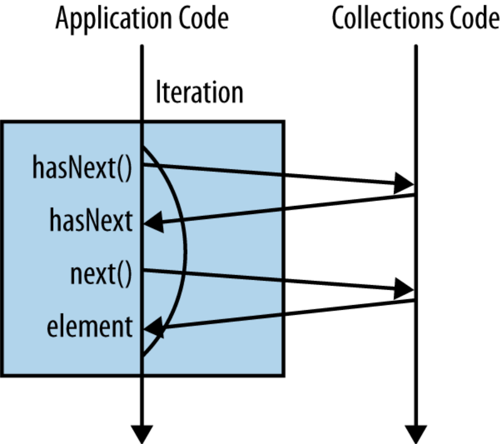
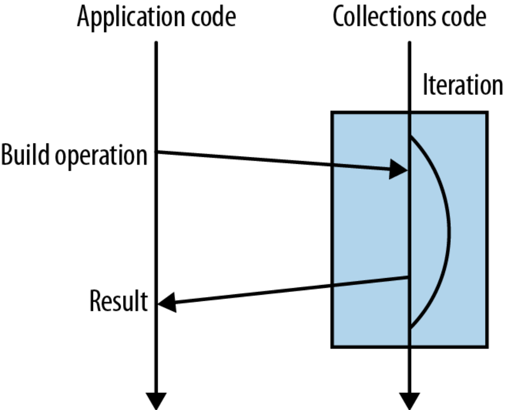

Programowanie funkcyjne
Stream API
refaktoryzacja do lambdy
Jakub Madej. 13 lutego 2016.

Agenda
- ważniejsze metody w Stream API
- stream API i Collector
- współbieżność a zrównoleglenie
- testowanie i debugowanie
Najważniejsze operacje
Terminalne:
- collect(toList())
- min() / max()
- reduce()
Nieterminalne:
- map()
- filter()
Collector
- wykorzystywany przy operacjach redukcji
- klasa Collectors; toList(), toSet(), toCollection()
- akumulacja elementów do kolekcji, konkatenacja stringów, suma, min...
Collector<A,T,R>
T - typ elementów strumienia
A - akumulator
R - rezultat redukcji
Collector; określony przez funkcje oraz charakterystyki:
- supplier() - tworzy result container
- accumulator() - dodaje element do result container'a
- combiner() - łączy dwa result containery
- finisher() - opcjonalnie; transformata ostatecznego wyniku
- charakterystyki; np. Characteristics.CONCURRENT
współbieżność a zrównoleglenie
- współbieżność (concurrency)
- zrównoleglenie (parallelism; data/task parallelism)
zrównoleglenie
- rosnące znaczenie związane z możliwośćiami sprzętu
- prawo Amdahla
- task paralellism - wykonywanie wielu funkcji na zestawie danych
- data parallelism - wykonywanie jednej funkcji na tych samych lub różnych danych
- redukcja sekwencyjna -> jeden result container
- redukcja równoległa -> wiele result containerów
równoległe przetwarzanie (nie) jest darmowe. warunki:
- identity constraint combiner.apply(a, supplier.get()).
- assiociativity constraint A a1 = supplier.get(); accumulator.accept(a1, t1); accumulator.accept(a1, t2); R r1 = finisher.apply(a1); // result without splitting A a2 = supplier.get(); accumulator.accept(a2, t1); A a3 = supplier.get(); accumulator.accept(a3, t2); R r2 = finisher.apply(combiner.apply(a2, a3)); // result with splitting
Java 8 - kolejne zmiany?
- 1996 - Java 1.0
- 1998 - wielordzeniowe CPU (IBM Power3)
Java 1.0
łatwiejszy w utrzymaniu kod, skupienie się na logice
wsparcie wielowątkowości
java.util.concurrent
Java 8 - nowości
- język
- lambda expressions
- functional interfaces
- type inference *
- method references
- default methods
- kolekcje
java.util.stream
- i wiele innych ...
lambda expressions
- kompaktowy sposób na opisywanie zachowania
- sposób na nieczytelne code as data
rozwiązanie:button .addActionListener(new ActionListener() { public void actionPerformed(ActionEvent e) { System.out.println("clicked!"); } });button .addActionListener(e -> System.out.println("clicked!"));
lambda expressions - warianty
Runnable noArguments = () -> System.out.println("Hello World");
ActionListener oneArgument = event -> System.out.println("button clicked");
Runnable multiStatement = () -> {
System.out.print("Hello");
System.out.println(" World");
};
BinaryOperator<Long> add = (x, y) -> x + y;
BinaryOperator<Long> addExplicit = (Long x, Long y) -> x + y;
lambda expressions - zmienne
- zmienna lokalna nie musi być zadeklarowana
final - jest to różnica w porównaniu do klas anonimowych
final String name = getUserName();
button.addActionListener(new ActionListener() {
public void actionPerformed(ActionEvent event) {
System.out.println("hi " + name);
}
});
String name = getUserName();
button.addActionListener(event -> System.out.println("hi " + name));
functional interfaces
- interfejs z jedną (abstrakcyjną) metodą, używany jako typ wyrażenia LE
- @FunctionalInterface
functional interfaces
- pakiet
java.util.function
| Interfejs | Argumenty | Typ zwracany | Przykład |
|---|---|---|---|
| Predicate<T> | T | boolean | czy spełniono warunek |
| Consumer<T> | T | void | drukowanie wartości |
| Function<T,R> | T | R | pobieranie wartości z obiektu |
| Supplier<T> | T | metoda fabryki | |
| UnaryOperator<T> | T | T | logiczna negacja |
| BinaryOperator<T> | (T,T) | T | operacja na liczbach |
type inference
- mechanizm umożliwiający dedukcję typów
- wprowadzaony w wersji 7 Javy
Map<String, Integer> oldWordCounts = new HashMap<String, Integer>();
Map<String, Integer> diamondWordCounts = new HashMap<>();
useHashmap(new HashMap<>());
type inference
Predicate<Integer> atLeast5 = x -> x > 5;
BinaryOperator<Long> addLongs = (x, y) -> x + y;
BinaryOperator addLongs = (x, y) -> x + y;
method references
- wyrażenia lambda dla metod mających już nazwę
domena problemu:
public class Person {
public enum Sex {
MALE, FEMALE
}
String name;
LocalDate birthday;
Sex gender;
String emailAddress;
public int getAge() {
// ...
}
public Calendar getBirthday() {
return birthday;
}
public static int compareByAge(Person a, Person b) {
return a.birthday.compareTo(b.birthday);
}
}
zadanie - wyświetlenie osób posortowanych wg danego kryterium
Person[] rosterAsArray = roster.toArray(new Person[roster.size()]);
class PersonAgeComparator implements Comparator<Person> {
public int compare(Person a, Person b) {
return a.getBirthday().compareTo(b.getBirthday());
}
}
Arrays.sort(rosterAsArray, new PersonAgeComparator());
sygnatura wołanej metody sort()
static <T> void sort(T[] a, Comparator<? super T> c)
Comparator jest anotowany jako @FunctionalInterface
wykorzystanie lambda expression
Arrays.sort(rosterAsArray,
(Person a, Person b) -> {
return a.getBirthday().compareTo(b.getBirthday());
}
);
wykorzystanie istniejącej metody
Arrays.sort(rosterAsArray,
(a, b) -> Person.compareByAge(a, b)
);
wykorzystanie referencji do metody
Arrays.sort(rosterAsArray, Person::compareByAge);
| Rodzaj referencji | Przykład |
|---|---|
| do statycznej metody | |
| do metody instancji | |
| do metody typu | |
| do konstruktora |
default methods
- umożliwiają rozszerzenie interfejsów zapewniając kompatybilność z kodem napisanym dla ich starszych wersji
default- mogą zostać zadeklarowane ponownie
- mogą zostać nadpisane
- przykład: stream()
Stream API
- wspiera programowanie funkcyjne na strumieniach
- korzysta z możliwości przedstawionych wcześniej, np. default methods
- umożliwia zrównoleglenie operacji
Collections.stream() vs Collections.parallelStream()
Stream API - wsparcie FP
- ukrywa iterację po kolekcji


Cechy strumienia
- może mieć nieskończony rozmiar
- moze być trawersowany tylko raz
java.lang.IllegalStateException: stream has already been operated upon or closed - jest nastawiony na przetwarzanie a nie na przechowywanie elementów
Najważniejsze operacje
- collect(toList())
- map()
- filter()
- flatMap()
- min() / max()
- reduce()
Popełniane błędy
- implementowanie w stylu FP bez znajomości semantyki
- nieużywanie Stream API
- używanie zbyt często operacji terminujących
- przypadkowe tworzenie nieskończonych strumieni
- wyknowyniae opreacji w niepwraidłewoj koeljonści MySQL SELECT syntax
- zapominanie o operacjach terminalnych
Czy powinienem programować funkcyjnie?
- niekoniecznie
dziękuję
Odnośniki:
- https://docs.oracle.com
- https://github.com/RichardWarburton/java-8-lambdas-exercises
- Java 8 Lambdas. Richard Warburton